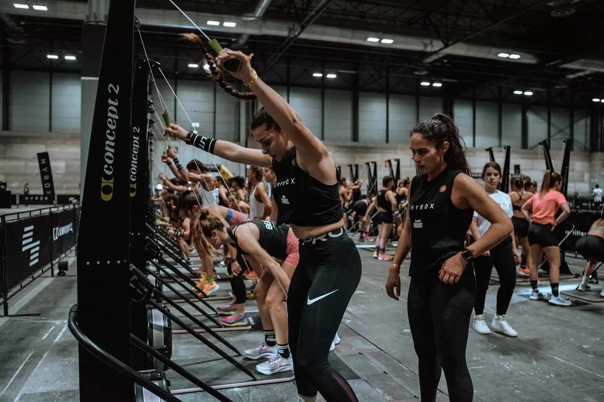
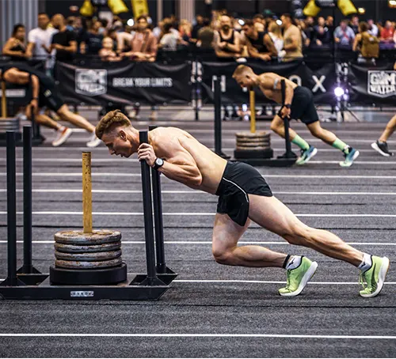
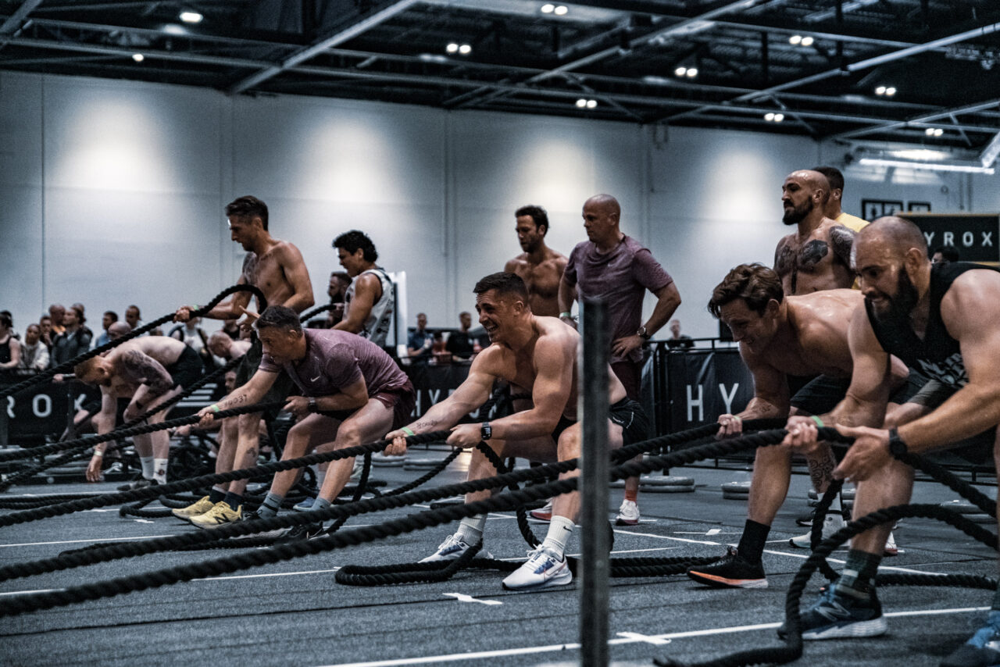
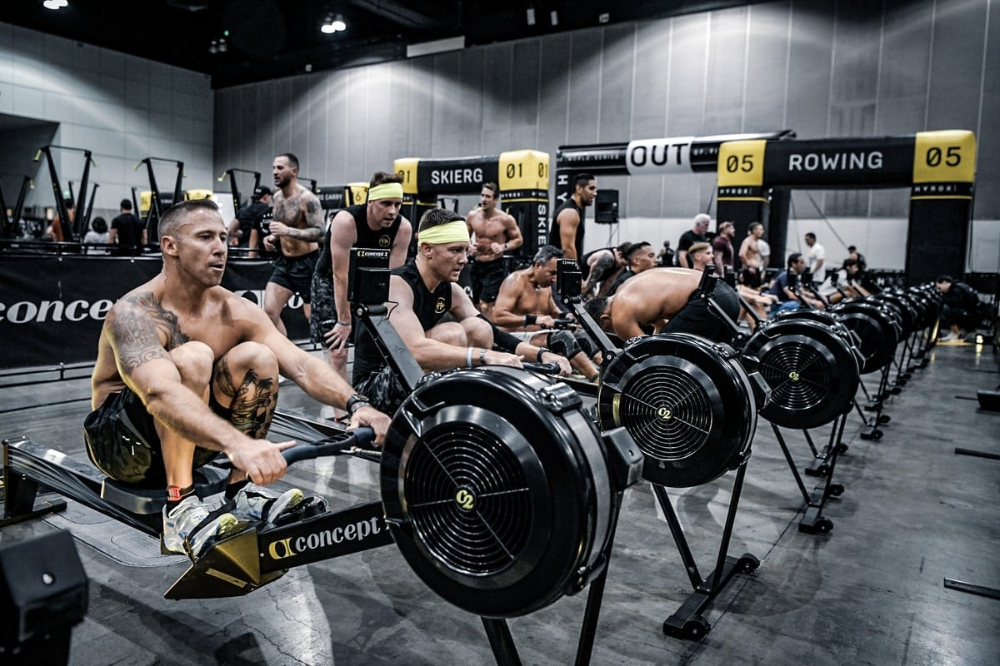
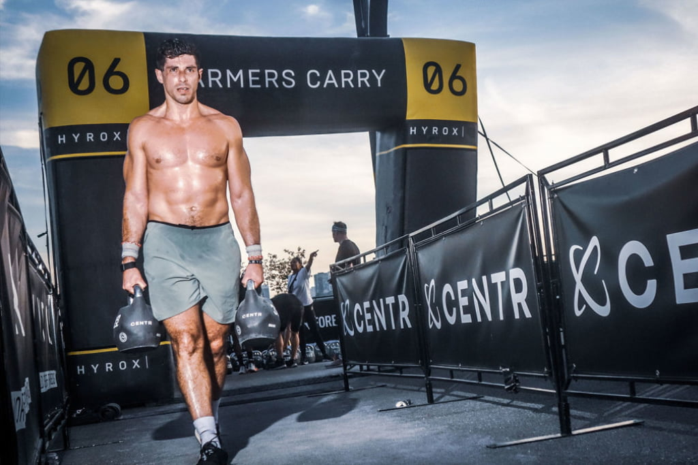
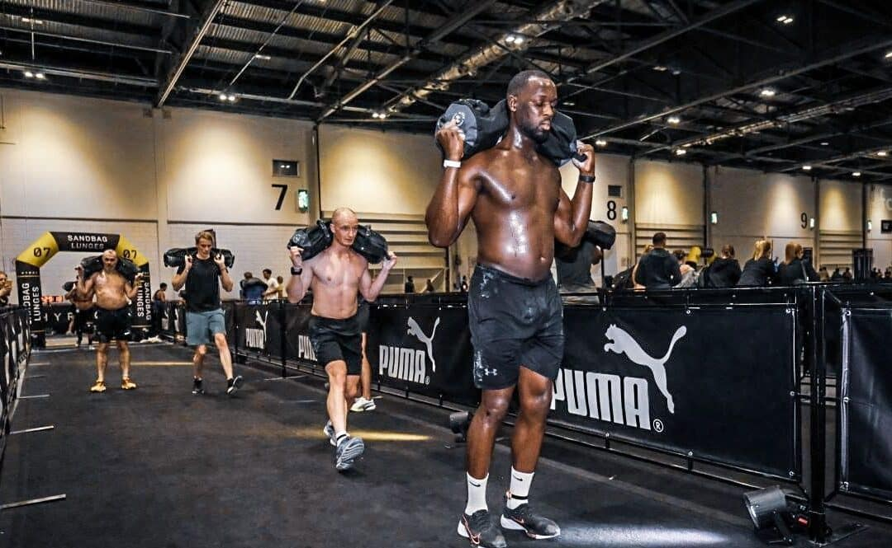
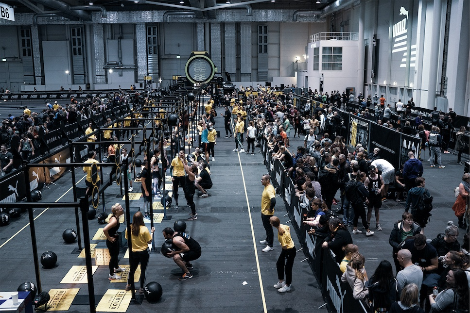

Easily Browse and Select From All Available
Hyrox Races Around the Globe
Quickly Find and Book Hotels for Your Stay During the Race Weekend
Conveniently Search for Available Flights Specifically for Your Race Weekend
Sign up
So What is Hyrox?
1 SKI ERG 1000M

The first HYROX workout station is 1000m on the Ski Erg.
This erg predominantly targets the arm, shoulder & core muscles;
however, when done efficiently, it also involves muscles in the lower body
- making the Ski Erg a full-body workout.
2 SLED PUSH 50M

The second workout station is 50m of Sled Push.
This movement targets the lower body muscles, including the entire posterior chain,
core & anterior thigh muscles in particular.
3 SLED PULL 50M

Get ready to use your glutes, back, biceps & the entire trunk during workout station three – 50m of Sled Pull.
4 BURPEE BROAD JUMPS 80M
Born in 1939, the fourth workout station is a full-body workout that is both loved and hated at the same time.
5 ROW 1000M

Station number five is the second ergometer in this fitness race.
1000m of rowing marks the beginning of the second half of your HYROX RACE.
6 FARMERS CARRY 200M

For 200m of Farmers Carry, engagement of your upper back muscles, core & grip strength is required.
This workout station is easy to practise on your weekly shop…
7 SANDBAG LUNGES 100M

10, 20 or 30 kilograms on your back whilst lunging? Welcome to workout station number seven.
Primarily targets the thigh and glute muscles, this one is a burner…
8 WALL BALLS 100X

The final station… Wall Balls. With the finish line in sight,
it’s time to finish your race in style & join the #HYROXFAMILY.
Easily Browse and Select From All Available Hyrox Races Around the Globe
Quickly Find and Book Hotels for Your Stay During the Race Weekend
Conveniently Search for Available Flights Specifically for Your Race Weekend.
Why Hyrox Race Finder?
Our tool is designed to not only display these races in a user-friendly format but also to assist you in finding flights and hotels for the race weekend.